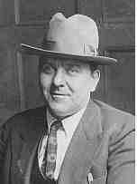

|
|
|
|
|
|
 James Neal HOEY (1881-1950) |
James Neal HOEY
Noted events in his life were: • He was employed before 1899 in Pittsburgh, Allegheny, PA. 7 • He served in the Marine Corps 13 Dec 1899-12 Dec 1904. 7 8 9 10 • He appeared in the 1900 census on 2 Jun 1900 in Gibralter. 11 • He worked as a policeman Apr 1905-4 Jan 1918 in Pittsburgh, Allegheny, PA. 4 5 6 9 10 • He appeared in the 1910 census on 29 Apr 1910 in Pittsburgh, Allegheny, PA. 12 • Lived: 6 Jan 1916, Pittsburgh, Allegheny, PA. 13 • James listed his occupation as an Inspector for Allegheny County on his Draft Registration card filled out on 12 Sep 1918. • He appeared in the 1920 census on 22 Jan 1920 in Pittsburgh, Allegheny, PA. 14 • He worked as a policeman 4 Mar 1922-1 Aug 1932 in Pittsburgh, Allegheny, PA. 6 • He appeared in the 1930 census on 16 Apr 1930 in Pittsburgh, Allegheny, PA. 15 • He worked as a superintendant of County Police from 1937 to 1950 in Pittsburgh, Allegheny, PA. 1 10 • He appeared in the 1940 census on 15 Apr 1940 in Bethel Township, Allegheny, PA. 16 James married Mary Catherine DONAHUE, daughter of Michael James DONAHUE and Mary Agnes DONOHOE, on 29 Sep 1925 in St. Paul's Cathedral, Pittsburgh, Allegheny, PA.1 (Mary Catherine DONAHUE was born on 7 Sep 1893 in Pittsburgh, Allegheny, PA,1 17 18 19 died on 23 Feb 1955 in Pittsburgh, Allegheny, PA 1 17 and was buried on 26 Feb 1955 in Calvary Cemetery, Pittsburgh, Allegheny, PA 1 17.) |
1 Thomas Hoey, Oral Interview of James Hoey (Pittsburgh, PA).
2 Commonwealth of Pennsylvania, Department of Health, Bureau of Vital Statistics, Pennsylvania Death Certificates, 1906-1970 (Harrisburg, PA (via Ancestry.com)), James Neal Hoey (filed 17 Mar 1950).
3 Diocese of Pittsburgh, Baptismal Record Extract, St. Agnes Church (Pittsburgh, PA, 8 July 1999).
4 Pittsburgh Press, James N. Hoey Obituary (Pittsburgh, PA, 15 Mar 1950).
5 Pittsburgh Post Gazette, James N. Hoey Obituary (Pittsburgh, PA, 15 Mar 1950).
6 Police Pension Fund Association of the City of Pittsburgh, Pension Record - James N. Hoey (Pittsburgh, PA, 1950).
7 United States Marine Corps, Miltary Service Records - James N. Hoey (Washington, D.C.).
8 James N. Hoey, Letter to Rose Quinn Hoey (Fonk Ku, China, 31 Mar 1901).
9 Adjutant General's Office, State of New York, Letter to James N. Hoey (4 Jun 1915).
10 Michael D. Stowell, Allegheny County Police: 1932-1987 (Pittsburgh, PA, 1987), Pg 4, 8.
11 USS Buffalo, 1900 U.S. Census, Military and Naval Population Schedule (Washington, D.C., National Archives and Records Administration), ED 9, Sheet 2, Line 40.
12 Pennsylvania, Allegheny County, 1910 U.S. Census, Population Schedule (Washington, D.C., National Archives and Records Administration), ED 317, Sheet 16, Line 10.
13 Adjutant General's Office, State of New York, Letter to James N. Hoey (6 Jan 1916).
14 Pennsylvania, Allegheny County, 1920 U.S. Census, Population Schedule (Washington, D.C., National Archives and Records Administration), ED 360, Sheet 12, Line 100.
15 Pennsylvania, Allegheny County, 1930 U.S. Census, Population Schedule (Washington, D.C., National Archives and Records Administration), ED 2-38, Sheet 15, Line 40.
16 Pennsylvania, Allegheny County, 1940 U.S. Census, Population Schedule (Washington, D.C., National Archives and Records Administration), ED 2-33, Sheet 9, Line 45.
17 Commonwealth of Pennsylvania, Department of Health, Bureau of Vital Statistics, Pennsylvania Death Certificates, 1906-1970 (Harrisburg, PA (via Ancestry.com)), Mary Hoey (filed 25 Feb 1955).
18 Pennsylvania, Allegheny County, 1900 U.S. Census, Population Schedule (Washington, D.C., National Archives and Records Administration), ED 173, Sheet 12, Line 79.
19 Thomas Hoey, Oral Interview of Mary Elizabeth Hoey Walsh (Pittsburgh, PA).
Home | Irish Roots | Name List